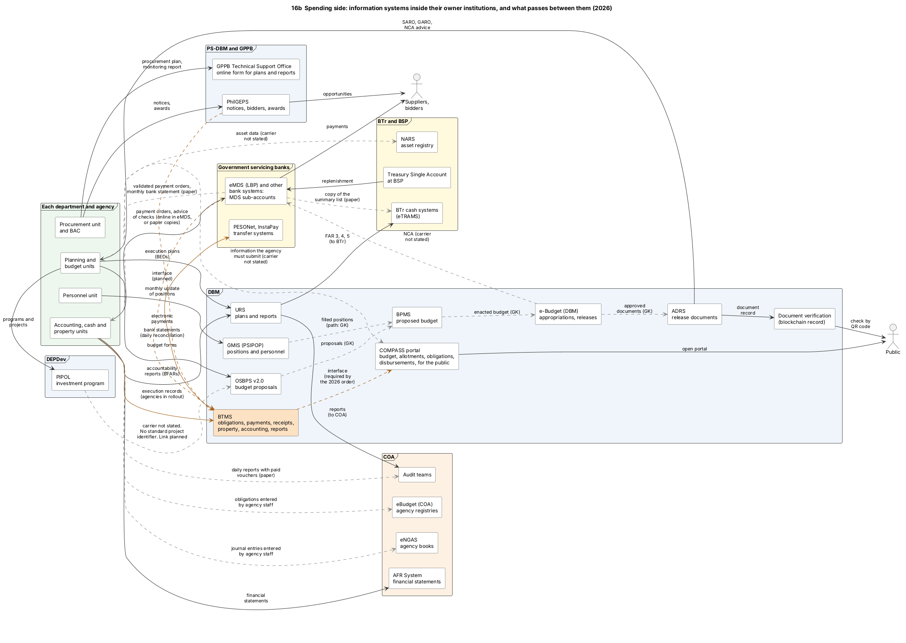

Diagram 16b · PlantUML component diagram
Spending side: information systems inside their owner institutions, and what passes between them (2026)
Question: On the SPENDING side (plan, budget, release, procurement, payment, reports, audit), which information system belongs to which institution, what passes from one system or body to another today, and by which carrier?

What the diagram shows
- Question: on the SPENDING side (plan, budget, release, procurement, payment, reports, audit), which information system belongs to which institution, what passes from one system or body to another today, and by which carrier?
- How to read it: one frame = one institution. One box inside = one information system (or, for an agency, a unit that enters data). Arrow = data that passes, with a short label.
- Solid black arrow = a source describes an electronic channel. In most cases a person of the sending body enters or uploads the content in a system of the receiver. The register in Reference B, section 4, gives the carrier of each arrow.
- Dashed grey arrow = paper copies, an entry by staff in a record or system of their own body, or a carrier that the sources do not state. The label says which. "(GK)" marks a flow that I know only from general knowledge.
- Orange arrow = part of BTMS, which is in phased rollout, or an interface that is required or planned.
- "not stated" never means "absent": it means that the sources that I read do not say how the content passes.
- Position of the labels: the drawing program places each label near the middle of its arrow, often a little above the line. Where two labels are close together, the table in chapter 16, section 6.1, lists every flow in words.
- What the sources state on pipol and osbps: no standard project identifier exists, and the sources do not state how the content passes today [SFA1][ROADMAP2024]. The arrows between the agency, the bank, BTr and the auditor follow the Manual, which prescribes paper copies [GAM-V1 Ch.6 s.56, Ch.21 s.5].
- THE REVENUE AND TREASURY SIDE is in diagram 16g.
- Why PlantUML: Mermaid cannot place boxes inside labelled frames and also route many labelled arrows between them in a readable way.
- Sources: [NBM156] OSBPS. [GMIS] GMIS. [PIP-MEMO] PIPOL. [ADRS] [NBC599] ADRS, URS, NCA to banks. [JC2019-1] reports through URS to DBM, COA, BTr. [RA12009 s.20] PhilGEPS. [GPPB-TSO2026-2] the procurement plan and the procurement monitoring report are submitted to the GPPB through an online form since 2026. [eMDS] LBP eMDS. [CL2013-16A] bank reports to BTr and replenishment. [COA-GAS] eNGAS, eBudget, AFR System. [BTR-SYS] eTRAMS, NARS. [CL2025-8] [BTMS-SITE] BTMS functions, interfaces, electronic payments, bank reconciliation. [DBM-BLOCKCHAIN] document verification. [ROADMAP2024] a working group was created to link PIPOL and OSBPS; duplicate encoding, manual processing. [SFA1] no standard project identifier, an integrated planning and budgeting tool is planned. [GAM-V1 Ch.6 s.56, s.58] paper copies of the payment order and its summary list to the bank, one copy from the bank to BTr, the validated copy back to the agency, the paid vouchers to the auditor, and eMDS as a mode for agencies with sub-accounts at the Land Bank. [GAM-V1 Ch.21 s.5] monthly bank statement. [GAM-V1 Ch.3 s.15][GAM-V2 App.36] obligations and journal entries recorded by agency staff. [COMPASS-LAUNCH] [EO126] COMPASS portal: open to the public since June 2026; agencies must submit and update information; the portal must be able to interface with the IFMIS, BTMS, PhilGEPS and DIME (read in press releases, not in the text of the order).
- General knowledge (GK), not opened in a source here: the flow from OSBPS to BPMS and from BPMS to the DBM e-Budget, the path of position data from GMIS to the budget system, which DBM system passes approved documents to ADRS, how asset data reaches NARS.
- Not stated in the sources I read: the carrier by which an NCA reaches the bank, and how the content of PIPOL reaches the budget forms.
- Not described in the sources I read: by which channel the information of an agency reaches the COMPASS portal, and which system supplies the figures of the portal today. The arrow from the agency to the portal is dashed for that reason.
- Not drawn as an arrow: the returns of taxes withheld that an agency files in the electronic system of BIR (diagram 16g). The payment feature that the procurement rules require of PhilGEPS, with an interface to the bank of the procuring entity [IRR12009 s.20.2.8]. Agencies send their reports through URS until they migrate to BTMS [GAA2026-GP]. After migration the reports listed in [CL2025-8] (FAR 1 to 6, BAR 1) are produced from BTMS. FAR 3, 4 and 5 go to BTr [JC2019-1]. The sources do not say into which BTr system.
Code

@startuml 16b_systems_components_spending
' QUESTION THIS DIAGRAM ANSWERS: on the SPENDING side (plan, budget, release, procurement, payment, reports, audit), which information system belongs to which institution, what passes from one system or body to another today, and by which carrier?
' READING: one frame = one institution. One box inside = one information system (or, for an agency, a unit that enters data). Arrow = data that passes, with a short label.
' Solid black arrow = a source describes an electronic channel. In most cases a person of the sending body enters or uploads the content in a system of the receiver. The register in Reference B, section 4, gives the carrier of each arrow.
' Dashed grey arrow = paper copies, an entry by staff in a record or system of their own body, or a carrier that the sources do not state. The label says which. "(GK)" marks a flow that I know only from general knowledge.
' Orange arrow = part of BTMS, which is in phased rollout, or an interface that is required or planned.
' "NOT STATED" NEVER MEANS "ABSENT": it means that the sources that I read do not say how the content passes.
' POSITION OF THE LABELS: the drawing program places each label near the middle of its arrow, often a little above the line. Where two labels are close together, the table in chapter 16, section 6.1, lists every flow in words.
' WHAT THE SOURCES STATE ON PIPOL AND OSBPS: no standard project identifier exists, and the sources do not state how the content passes today [SFA1][ROADMAP2024]. The arrows between the agency, the bank, BTr and the auditor follow the Manual, which prescribes paper copies [GAM-V1 Ch.6 s.56, Ch.21 s.5].
' THE REVENUE AND TREASURY SIDE is in diagram 16g.
' WHY PLANTUML: Mermaid cannot place boxes inside labelled frames and also route many labelled arrows between them in a readable way.
' SOURCES: [NBM156] OSBPS. [GMIS] GMIS. [PIP-MEMO] PIPOL. [ADRS] [NBC599] ADRS, URS, NCA to banks. [JC2019-1] reports through URS to DBM, COA, BTr. [RA12009 s.20] PhilGEPS. [GPPB-TSO2026-2] the procurement plan and the procurement monitoring report are submitted to the GPPB through an online form since 2026. [eMDS] LBP eMDS. [CL2013-16A] bank reports to BTr and replenishment. [COA-GAS] eNGAS, eBudget, AFR System. [BTR-SYS] eTRAMS, NARS. [CL2025-8] [BTMS-SITE] BTMS functions, interfaces, electronic payments, bank reconciliation. [DBM-BLOCKCHAIN] document verification. [ROADMAP2024] a working group was created to link PIPOL and OSBPS; duplicate encoding, manual processing. [SFA1] no standard project identifier, an integrated planning and budgeting tool is planned. [GAM-V1 Ch.6 s.56, s.58] paper copies of the payment order and its summary list to the bank, one copy from the bank to BTr, the validated copy back to the agency, the paid vouchers to the auditor, and eMDS as a mode for agencies with sub-accounts at the Land Bank. [GAM-V1 Ch.21 s.5] monthly bank statement. [GAM-V1 Ch.3 s.15][GAM-V2 App.36] obligations and journal entries recorded by agency staff. [COMPASS-LAUNCH] [EO126] COMPASS portal: open to the public since June 2026; agencies must submit and update information; the portal must be able to interface with the IFMIS, BTMS, PhilGEPS and DIME (read in press releases, not in the text of the order).
' GENERAL KNOWLEDGE (GK), NOT OPENED IN A SOURCE HERE: the flow from OSBPS to BPMS and from BPMS to the DBM e-Budget, the path of position data from GMIS to the budget system, which DBM system passes approved documents to ADRS, how asset data reaches NARS.
' NOT STATED IN THE SOURCES I READ: the carrier by which an NCA reaches the bank, and how the content of PIPOL reaches the budget forms.
' NOT DESCRIBED IN THE SOURCES I READ: by which channel the information of an agency reaches the COMPASS portal, and which system supplies the figures of the portal today. The arrow from the agency to the portal is dashed for that reason.
' NOT DRAWN AS AN ARROW: the returns of taxes withheld that an agency files in the electronic system of BIR (diagram 16g). The payment feature that the procurement rules require of PhilGEPS, with an interface to the bank of the procuring entity [IRR12009 s.20.2.8]. Agencies send their reports through URS until they migrate to BTMS [GAA2026-GP]. After migration the reports listed in [CL2025-8] (FAR 1 to 6, BAR 1) are produced from BTMS. FAR 3, 4 and 5 go to BTr [JC2019-1]. The sources do not say into which BTr system.
title 16b Spending side: information systems inside their owner institutions, and what passes between them (2026)
skinparam shadowing false
skinparam defaultFontName SansSerif
skinparam defaultFontSize 12
skinparam componentStyle rectangle
skinparam ArrowColor #333333
skinparam ArrowFontSize 11
skinparam packageStyle frame
skinparam nodesep 35
skinparam ranksep 70
skinparam component {
BackgroundColor #FFFFFF
BorderColor #444444
}
skinparam package {
BorderColor #555555
FontStyle bold
}
left to right direction
package "Each department and agency" #EDF7ED {
[Planning and\nbudget units] as AGB
[Personnel unit] as AGH
[Procurement unit\nand BAC] as AGP
[Accounting, cash and\nproperty units] as AGA
}
package "DEPDev" #EEF4FB {
[PIPOL\ninvestment program] as PIPOL
}
package "DBM" #EEF4FB {
[OSBPS v2.0\nbudget proposals] as OSBPS
[GMIS (PSIPOP)\npositions and personnel] as GMIS
[BPMS\nproposed budget] as BPMS
[e-Budget (DBM)\nappropriations, releases] as EBUD
[ADRS\nrelease documents] as ADRS
[Document verification\n(blockchain record)] as BCV
[URS\nplans and reports] as URS
[COMPASS portal\nbudget, allotments, obligations,\ndisbursements, for the public] as COMP
[BTMS\nobligations, payments, receipts,\nproperty, accounting, reports] as BTMS #FDE0C2
}
package "PS-DBM and GPPB" #EEF4FB {
[PhilGEPS\nnotices, bidders, awards] as PGEPS
[GPPB Technical Support Office\nonline form for plans and reports] as GPPBT
}
package "Government servicing banks" #FFF8DC {
[eMDS (LBP) and other\nbank systems:\nMDS sub-accounts] as EMDS
[PESONet, InstaPay\ntransfer systems] as RAILS
}
package "BTr and BSP" #FFF8DC {
[BTr cash systems\n(eTRAMS)] as TRAMS
[NARS\nasset registry] as NARS
[Treasury Single Account\nat BSP] as TSA
}
package "COA" #FDF1E3 {
[eBudget (COA)\nagency registries] as EBUDC
[eNGAS\nagency books] as ENGAS
[AFR System\nfinancial statements] as AFRS
[Audit teams] as AUD
}
actor "Suppliers,\nbidders" as SUP
actor "Public" as PUB
' ---- planning and budget preparation
AGB --> PIPOL : programs and\nprojects
AGB --> OSBPS : budget forms
AGH --> GMIS : monthly update\nof positions
PIPOL ..[#888888]> OSBPS : carrier not stated.\nNo standard project\nidentifier. Link planned
OSBPS ..[#888888]> BPMS : proposals (GK)
GMIS ..[#888888]> BPMS : filled positions\n(path: GK)
BPMS ..[#888888]> EBUD : enacted budget (GK)
' ---- release
EBUD ..[#888888]> ADRS : approved\ndocuments (GK)
ADRS --> AGB : SARO, GARO,\nNCA advice
ADRS --> BCV : document\nrecord
BCV --> PUB : check by\nQR code
EBUD ..[#888888]> EMDS : NCA (carrier\nnot stated)
AGB --> URS : execution plans\n(BEDs)
' ---- procurement, obligation, payment
AGP --> PGEPS : notices,\nawards
AGP --> GPPBT : procurement plan,\nmonitoring report
PGEPS --> SUP : opportunities
AGA ..[#888888]> EBUDC : obligations entered\nby agency staff
AGA ..[#888888]> ENGAS : journal entries entered\nby agency staff
AGA --> EMDS : payment orders, advice\nof checks (online in eMDS,\nor paper copies)
EMDS --> SUP : payments
EMDS ..[#888888]> TRAMS : copy of the\nsummary list (paper)
EMDS ..[#888888]> AGA : validated payment orders,\nmonthly bank statement (paper)
TSA --> EMDS : replenishment
' ---- reporting and audit
AGA --> URS : accountability\nreports (BFARs)
URS --> TRAMS : FAR 3, 4, 5\n(to BTr)
URS --> AUD : reports\n(to COA)
AGA --> AFRS : financial\nstatements
AGA ..[#888888]> AUD : daily reports with paid\nvouchers (paper)
AGA ..[#888888]> NARS : asset data (carrier\nnot stated)
' ---- publication (COMPASS, since June 2026)
AGB ..[#888888]> COMP : information the agency\nmust submit (carrier\nnot stated)
COMP --> PUB : open portal
BTMS .[#A35200].> COMP : interface\n(required by\nthe 2026 order)
' ---- BTMS (in rollout)
AGA -[#A35200]-> BTMS : execution records\n(agencies in rollout)
PGEPS .[#A35200].> BTMS : interface\n(planned)
BTMS -[#A35200]-> RAILS : electronic\npayments
EMDS .[#A35200].> BTMS : bank statements\n(daily reconciliation)
@enduml